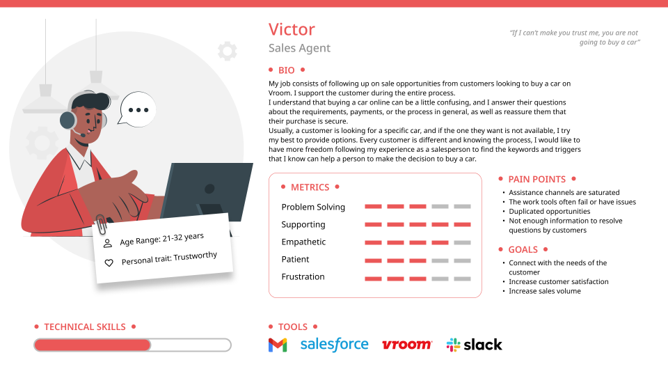

Goal
To trace the call process and identify problematic areas to improve the customer experience.
1. User interviews
We interviewed ten agents and supervisors from different lines of business to learn about their practices and their perspective on the customers.
Empathy Map
Say
- “If I can’t make you trust me, you are not going to buy a car”.
- “I need to review every case very carefully, so I don’t bother the customer”.
- “Sometimes I understand better what the client needs by reading my notes, than what they are saying”
Do
- Sales agents provide sales support and follow-up of unfinished online purchases.
- Middle office agents review customer cases to follow-up on missing documents to complete online purchases or sales.
- Customer care agents give general support for the customer before, during, or after buying or selling.
Think
- Customer care and Middle office agents think they are capable of providing more services to avoid transferring so many calls.
- Sales agents develop their scripts to generate rapport with customers and finalize a purchase.
- Supervisors think that the stress of their agents is related to the COVID19 provision to work from home, not the job itself.
Feel
- Agents like to work from home, they do not feel they performance has decreased.
- Supervisors feel the company is not sharing complete or updated information about processes.
- Agents feel they do not have enough technical support during difficult calls.
2. Personas
We created personas of the agents to foster empathy and help us to focus our research and make better recommendations to areas of the processes that really need to improve.
Sales Agent:
Middle Office Agent:
Customer Care Agent:
3. Journey Map
The journey map covers the process of a customer buying a car on Vroom.com and through the call center. This version is not complete to not overshare sensitive information.